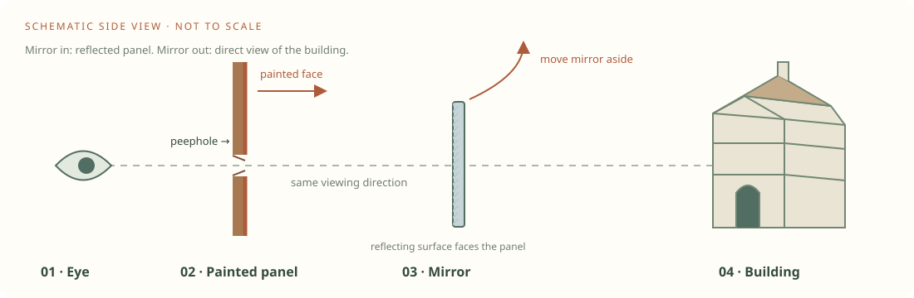

One viewing position
The panel was made for a particular position near the cathedral entrance.
Can a flat picture line up with the world? Revisit a famous mirror experiment, test the importance of a fixed viewpoint, then explore the geometry of eye level, horizons, and vanishing points.
Start the mirror experiment →In the early fifteenth century, Brunelleschi made a perspective panel of Florence’s Baptistery for a specific viewing location. According to Manetti’s later account, the observer looked from behind the panel through a small hole, comparing its image in a mirror with the building when the mirror was removed. [1]

The panel was made for a particular position near the cathedral entrance.
Looking through the hole constrains the eye’s position. The painted face points toward the mirror.
Insert it to see the reflected panel; remove it to see the building.
The actual Baptistery supplies a scene against which the painted view can be compared.
Manetti describes burnished silver in the panel’s sky area, reflecting the actual sky and moving clouds. The original panels are lost; our knowledge comes from later accounts and reconstructions. This screen simulation does not reproduce that silver-sky effect. [2]
Start centered at an eye height of 1.60 m. Before moving anything, predict whether the dome and doors will line up. Slide the mirror edge across the cathedral, then change just one viewpoint control and compare again. Turn on VP and Horizon to trace the geometry behind the match.
The painted and direct views line up across the mirror edge. Drag the divider to check the cathedral’s silhouette, doors, and dome. The warm tint identifies the reflection.
This mirror experiment keeps camera orientation fixed and level. The guide lines are explanatory overlays, not features of the historical mirror apparatus.
01 · CompareDrag the mirror edge across the cathedral. At the original viewpoint, both halves line up.
02 · MoveStep sideways or change eye height. The direct view shifts while the reflected painting stays fixed.
03 · RealignReturn to the original viewpoint and the two views line up again.
A digital analogy using an imagined Florentine cathedral and piazza, rather than a reconstruction of the original Baptistery or apparatus. The painted panel is shown in its final reflected orientation. The left region is the reflected painting and the right is the direct virtual view. The moving edge is a screen-space analogy for moving the mirror. The frame and warm tint mark the reflection; there is no photograph or live camera feed. The sideways and height controls deliberately relax the fixed-viewpoint constraint of the historical peephole. These controls are independent of the general perspective simulator below.
| Try this | Look for this | What it supports |
|---|---|---|
| Match the original viewpoint. Keep the eye centered at 1.60 m and sweep the mirror edge. | The dome, facade, and door edges continue across the divide. The computed displacement is zero. | At this viewpoint, the two images assign the same screen positions to corresponding landmarks. |
| Change one variable. Move sideways, or change eye height while keeping direction fixed. | The direct view shifts relative to the fixed painting; the displacement increases. | A painting made for one viewpoint does not generally match the same scene from another position. |
| Trace VP and Horizon. Enable both guides, then move sideways without turning the camera. | The facade shifts but the forward VP stays on the same horizon at image center. | Vanishing points encode line directions relative to the camera. A shared VP is not sufficient evidence of a complete image match. |
| Return to the original viewpoint. Use the reset button. | The outlines line up again and the displacement returns to zero. | The mismatch is controlled by viewpoint, rather than by a change to the painting. |
From a constrained viewpoint, a painted representation can be compared directly with the visible geometry of a real building. Matching contours support a correspondence between the depicted and observed view at that position.
The fixed image and current view use the same perspective model. Their alignment is a consistency demonstration of that model, not an independent empirical test of it. The displacement readout measures the difference between these computed images.
It does not establish a unique 3D reconstruction, a match from every viewpoint, a complete account of human vision, or the exact accuracy of Brunelleschi’s lost panel. An outline match also says little about color, material, or binocular depth.
The takeaway: a perspective image describes a relationship between a scene and a viewpoint. The mirror makes that relationship easier to compare.
Now leave the fixed panel behind. In the open piazza below, vary eye height and camera pitch independently. Predict the horizon’s position before touching a slider, then check the result.
Keep pitch at 0°; raise the observer.
Does the horizon move in the image, or do the people move relative to it?
Keep eye height fixed; tilt up and down.
Where do the horizon and the ground’s vanishing point go?
Match the people’s eye height.
Compare near and far people: what stays on the horizon?
Changing only the observer’s height leaves the horizon in the same image position. What changes is whether people’s eyes appear above or below it.
The dashed line marks the horizontal direction at eye level. The solid line shows where the camera is pointing.
The horizon, vanishing points, and the observer’s position are related, but each tells us something different.
The horizon represents directions at infinity in the horizontal plane through the observer’s eyes. Vanishing points for lines parallel to the ground therefore lie on the horizon.
The camera’s forward direction maps to the center of the image. Tilt up and the horizon moves down; tilt down and it moves up.
On level ground, people whose eyes are at the observer’s eye height appear with their eyes on the horizon, whether they are near or far.
The center of the image lies on the horizon only when the camera is level. Tilting up or down separates the two. The horizon’s image position alone cannot tell you the observer’s physical elevation.
Parallel horizontal lines extend toward a common direction at infinity. Perspective projection maps that direction to a vanishing point on the horizon. A building’s vertical direction is different: when you tilt the camera up, vertical lines can converge toward a third vanishing point above the image; tilt down, and it can lie below.
A modern geometric exploration inspired by Brunelleschi’s experiment; the buildings form an imagined piazza. Model assumptions: level ground, upright people, and an ideal pinhole camera with pitch rotation only. Earth’s curvature and lens distortion are ignored. The geometric horizon still exists when it falls outside the image.
The apparatus illustration is an original schematic for this exhibit. The digital cathedral is imagined and is not a reconstruction of Florence’s Baptistery. Moving the split boundary is a screen-space analogy; it does not trace light through a physical mirror.